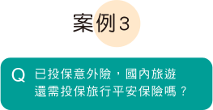

-
小金額
大保障國內旅遊最低保費每日只需一杯咖啡的價格，即獲得豐富的保障內容
-
依照個人需求
彈性調整自由選擇投保金額、旅遊天數、國內外與附加保障內容
-
旅途全程
皆有保障不論交通過程、全程旅遊期間，皆享有完整的保障內容
- 點我看Ryan投保方案
-
投保旅行平安保險提供醫療、意外多樣化附加條款保障
-
重點
- 旅行社投保的旅行業責任保險，其保障範圍並不包含突發醫療疾病，而旅行平安保險提供海外突發疾病醫療健康保險，讓您海外旅遊更有保障。
-
案例
方案 -
Ryan跟團隨著旅行社人員一起到日本五天四夜旅遊，後來在日本旅途中意外感冒拉肚子，至當地診所就醫花了一筆醫療費，還好Ryan有自行投保旅行平安保險，突發性的醫療費用可獲得給付。
註：本案例內容僅供參考，詳細保單內容請詳閱保單條款。
-
- 點我看Ryan投保方案
-
投保旅行平安保險，享全程旅途保障
-
重點
- 刷卡送的旅行平安保險，通常只保障搭乘公共運輸工具期間的前後5個小時內。
-
案例
方案 - Laura到義大利遊學一個月(30天)，下飛機5天後因身體不適至當地看診付出高額醫療費，幸好有另外投保旅行平安保險，後來能獲得醫療給付。
-
- 點我看Laura投保方案
-
保障通路 保障期間 意外醫療 玉山網路投保
旅行平安保險全程旅途 V 信用卡 一般限於出發至目的地
搭乘公共運輸工具期間限特定卡種 -
註1：本案例內容僅供參考，詳細保單內容請詳閱保單條款。
註2：「公共運輸工具」係指以提供旅客運送服務為目的之公共運輸且經當地政府登記許可， 行駛於固定航、路線之商用客機或水、陸上公共交通工具。
註3：信用卡旅行平安保險實際保障內容視各銀行信用卡所投保的旅行平安保險契約內容而定。
註4：完整保障範圍與相關注意事項，請詳玉山官網。
- 點我看Laura投保方案
- 點我看Shawn投保方案
-

國內旅遊投保旅行平安保險，低保費高保額更安心
-
重點
- 相同保額之下，意外險保費通常高於旅行平安保險，而旅行平安保險只要低保費就可獲得高保額。
-
案例
方案 -
Shawn一個星期後跟家人去花蓮遊玩三天兩夜，平日下班後透過玉山網路銀行投保旅行平安保險，出發前最快兩小時前即可生效。
註：本案例內容僅供參考，詳細保單內容請詳閱保單條款。
-
- 點我看Shawn投保方案

輕鬆瞭解保障內容
國內外旅遊「1+2+3」，讓您旅途更安心(註1)
【以保險金額1,000萬為例】
單位：新臺幣元
| 1.主約 | 旅行平安保險(ETA) |
|---|---|
| 給付項目 | 給付保險金 |
| 意外身故 | 1,000萬 |
| 意外殘廢 | 50-1,000萬 |
| 重大燒燙傷 | 250萬 |
| 2.附加條款 | 傷害醫療費用給付(EMR) |
|---|---|
| 給付項目 | 給付保險金 |
| 傷害醫療(補助超過健保給付部分) | 最高100萬 |
| 3.附加條款 | 【海外旅遊專屬】 海外突發疾病醫療健康保險(OHS) |
|---|---|
| 給付項目 | 給付保險金 |
| 住院醫療 | 最高100萬 |
| 門診醫療 | 最高1萬 |
| 急診醫療 | 最高1萬 |
| 返國住院醫療 | 最高10萬 |
註1：【1+2+3】保障限定國外旅遊適用，國內旅遊可選擇【1+2】保障內容。
註2：完整保障範圍與相關注意事項，請詳見玉山官網及保單條款。
-
1.會員註冊
玉山存戶使用玉山網銀帳號註冊網路投保會員
-
2.資料填寫
挑選保障內容輸入投保及繳費資料
-
3.投保成功
保險公司核保成功並完成繳費扣款。
玉山網路投保簡單三步驟
-
玉山安心保
瞭解更多玉山網路投保 -
e指理財
瞭解更多玉山數位理財 -
e指開戶
瞭解更多玉山e指開戶
瞭解更多數位服務
注意事項
- ※本商品經南山人壽合格簽署人員檢視其內容業已符合一般精算原則及保險法令，惟為確保權益，基於保險公司與消費者衡平對等原則，消費者仍應詳加閱讀保險單條款與相關文件，審慎選擇保險商品。本商品如有虛偽不實或違法情事，應由南山人壽及負責人依法負責。
- ※投保後解約可能不利消費者，請慎選符合需求之保險商品。
- ※保險契約各項權利義務皆詳列於保單條款，消費者務必詳加閱讀了解。
- ※本商品為保險商品，依保險法及其他相關法令規定，受「人身保險安定基金」之保障；但本商品非存款商品，不受「存款保險」之保障。
- ※消費者於購買本商品前，應詳閱各種銷售文件內容；南山人壽網路投保旅行平安保險(ETA)之預定附加費用率6.41%；南山人壽網路投保傷害醫療費用給付附加條款(EMR)之預定附加費用率為11.5%；南山人壽海外突發疾病醫療健康保險附加條款(OHS)之預定附加費用率最高25%，最低8%;如要詳細了解本商品之附加費用或其他相關資訊，請洽本公司服務中心或網站，以保障您的權益。
- ※南山人壽財務及業務等公開資訊，歡迎至南山人壽企業網站
- ※本簡介僅供參考，詳細內容請參閱保單條款之規定；南山人壽保留最終承保與否之權利。
【傳統型保險警語】 保險商品由各保險公司提供，玉山銀行僅係推介招攬。要保人投保前應詳閱保單條款及產品說明書等文件，投保後解約或不繼續繳費可能不利消費者，請慎選符合需求之保險商品。保險商品受保險安定基金保障，非存款商品，不受「存款保險」之保障。稅法相關規定之改變可能會影響保險商品之投資報酬及給付金額。若遇遺產稅額之計算，仍須依賦稅機關按個案實質認定原則為準。因外幣收付之非投資型人身保險持有期間長，匯率風險及該幣別所屬國家之政治、經濟變動風險較高。因此，投保前請要保人審慎衡量。保險公司保留核保及最終承保與否之一切權利。